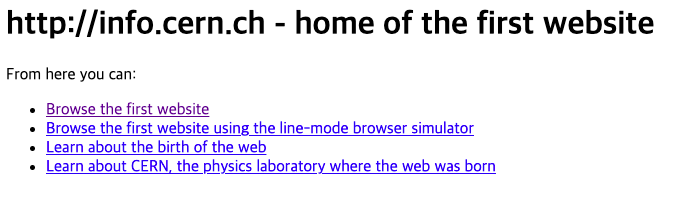

Back to Index
Self Directed Leaning:
Coding [2]
2021.03.27
WEB16-.
원시맵 -
16 원시맵 primitive WEB

1960년 인터넷 개발 / 1990년 웹이 개발 > 폭팔적 성장
World Wide Web 개발
17 인터넷을 여는 열쇠: 서버와 클라이언트
인터넷을 위한 컴퓨터 수 : 2대

18. 웹호스팅: github pages
GitHub 무료 웹서버 제공
오픈소스 제공 사이트
Create a new repository
HTML
하이퍼텍스트 마크업 언어(HyperText Markup Language, HTML, 문화어: 초본문표식달기언어, 하이퍼본문표식달기언어)는 웹 페이지를 위한 지배적인 마크업 언어다. 또한, HTML은 제목, 단락, 목록 등과 같은 본문을 위한 구조적 의미를 나타내는 것뿐만 아니라 링크, 인용과 그 밖의 항목으로 구조적 문서를 만들 수 있는 방법을 제공한다. 그리고 이미지와 객체를 내장하고 대화형 양식을 생성하는 데 사용될 수 있다. HTML은 웹 페이지 콘텐츠 안의 꺾쇠 괄호에 둘러싸인 "태그"로 되어있는 HTML 요소 형태로 작성한다. HTML은 웹 브라우저와 같은 HTML 처리 장치의 행동에 영향을 주는 자바스크립트와 본문과 그 밖의 항목의 외관과 배치를 정의하는 CSS 같은 스크립트를 포함하거나 불러올 수 있다. HTML과 CSS 표준의 공동 책임자인 W3C는 명확하고 표상적인 마크업을 위하여 CSS의 사용을 권장한다.
생활코딩 유튜브 바로가기